一级保护动物
| 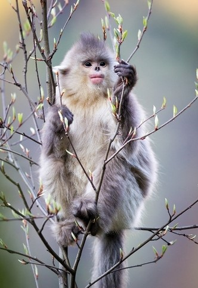 | 滇金丝猴 滇金丝猴（学名：Rhinopithecus bieti）体长51-83厘米，尾长52-75厘米；体重9-17千克。滇金丝猴的皮毛并不是金黄色的毛，以灰黑、白色为主。中文标准名称应该是云南仰鼻猴。它们的头顶长有尖形黑色冠毛，眼周和吻鼻部青灰色或肉粉色，鼻端上翘呈深蓝色。身体背侧、手足和尾均为灰黑色，背后具有灰白色的稀疏长毛。身体腹面、颈侧、臀部及四肢内侧均为白色。 滇金丝猴栖息于海拔3000米以上的高山暗针叶林带，活动范围可从2500米到5000米的高山。主食松萝针叶树的嫩叶和越冬的花苞及叶芽苞，食植物嫩芽及幼叶。婴猴的出生多集中3-4月，雌猴两年生一胎，孕期约为7个月。 滇金丝猴是中国特有物种。仅分布在中国川滇藏三省区交界处，喜马拉雅山南缘横断山系的云岭山脉当中，澜沧江和金沙江之间一个狭小地域 。 |
大熊猫 大熊猫（学名：Ailuropoda melanoleuca，英文名称：Giant panda），属于食肉目、熊科、大熊猫亚科和大熊猫属唯一的哺乳动物，体色为黑白两色，它有着圆圆的脸颊，大大的黑眼圈，胖嘟嘟的身体，标志性的内八字的行走方式，也有解剖刀般锋利的爪子。是世界上最可爱的动物之一。 大熊猫已在地球上生存了至少800万年，被誉为“活化石”和“中国国宝”，世界自然基金会的形象大使，是世界生物多样性保护的旗舰物种。据第三次全国大熊猫野外种群调查，全世界野生大熊猫不足1600只，属于中国国家一级保护动物。截止2011年10月，全国圈养大熊猫数量为333只。大熊猫最初是吃肉的，经过进化，99%的食物都是竹子了，但牙齿和消化道还保持原样，仍然划分为食肉目。野外大熊猫的寿命为18～20岁，圈养状态下可以超过30岁。 |
|
华南虎 华南虎，拉丁学名：Panthera tigris Amoyensis （厦门虎，南中国虎）。于1981年被列入CITES公约附录Ⅰ保护名单，亦称“中国虎”，华南虎头圆，耳短，四肢粗大有力，尾较长，胸腹部杂有较多的乳白色，全身橙黄色并布满黑色横纹。毛皮上有既短又窄的条纹，条纹的间距较孟加拉虎、西伯利亚虎的大，体侧还常出现菱形纹，在亚种老虎中体型较小。 华南虎以草食性动物野猪、鹿、狍等为食，是中国的十大濒危动物之一、国家一级保护动物，红色物种名录极度濒危，在野外已灭绝。 华南虎仅在中国分布，是中国特有的虎亚种。 |
|
 |
扬子鳄 扬子鳄（学名：Alligator sinensis）或称作鼍（tuó）， 是中国特有的一种鳄鱼，是世界上最小的鳄鱼品种之一。它既是古老的，又是现存数量非常稀少、世界上濒临灭绝的爬行动物。因其生活在长江流域，故称“扬子鳄”。在扬子鳄身上，至今还可以找到早先恐龙类爬行动物的许多特征。所以，人们称扬子鳄为“活化石”。因此，扬子鳄对于人们研究古代爬行动物的兴衰和研究古地质学和生物的进化，都有重要意义。 中国已经把扬子鳄列为国家一级保护动物，严禁捕杀。为了使这种珍贵动物的种族能够延续下去，中国还在安徽、浙江等地建立了扬子鳄的自然保护区和人工养殖场。扬子鳄属于爬行动物，卵生。 |
| 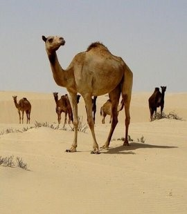 | 野骆驼 扬子鳄（学名：Alligator sinensis）或称作鼍（tuó）， 是中国特有的一种鳄鱼，是世界上最小的鳄鱼品种之一。它既是古老的，又是现存数量非常稀少、世界上濒临灭绝的爬行动物。因其生活在长江流域，故称“扬子鳄”。在扬子鳄身上，至今还可以找到早先恐龙类爬行动物的许多特征。所以，人们称扬子鳄为“活化石”。因此，扬子鳄对于人们研究古代爬行动物的兴衰和研究古地质学和生物的进化，都有重要意义。 中国已经把扬子鳄列为国家一级保护动物，严禁捕杀。为了使这种珍贵动物的种族能够延续下去，中国还在安徽、浙江等地建立了扬子鳄的自然保护区和人工养殖场。扬子鳄属于爬行动物，卵生。 |
二级保护动物
| 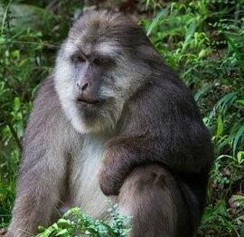 | 短尾猴 短尾猴（学名：Macaca arctoides）也称红面猴，是体型较大的一种猕猴，体重5千克，体长50-56厘米，尾极短；颜面部常为暗红色或带紫红色斑块；体色深暗，背部多为暗褐黑色或暗橄榄棕褐色，腹面稍浅于背部，亦为暗棕黄色。中国西南一带的短尾猴头顶棕色较重，而产于东部者其头顶褐色显著。尾巴短得出奇，还没有后脚长，仅为体长的十分之一，而且被毛稀少，因此又有“断尾猴”之称。 主要栖于1500-3000米的原始阔叶林、针阔混交林或竹林地带。食性较杂，既取食野果、树叶、竹笋，也捕食蟹、蛙等小动物。 分布于中国的华南及西南地区、孟加拉、柬埔寨、印度等国。属于CITES附录Ⅱ。 |
| 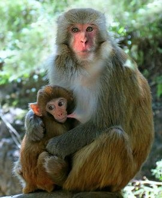 | 猕猴 猕猴（学名：Macaca mulatta）体长51-63厘米。是典型的猕猴属动物，主要特征是尾短，具颊囊。躯体粗壮，平均体长约50厘米，它们的前肢与后肢大约同样长，拇指能与其它四指相对，抓握东西灵活，前额低，有一突起的棱。头部呈棕色，背部棕灰或棕黄色，下部橙黄或橙红色，腹面淡灰黄色。 栖息广泛，草原、沼泽各类森林。主要栖息在石山峭壁、溪旁沟谷和江河岸边的密林中或疏林岩山上，群居。成十余只乃至数百只大群。以树叶、嫩枝、野菜等为食，也吃小鸟、鸟蛋、各种昆虫，捕食其它小动物。相互之间联系时会发出各种声音或手势，互相之间梳毛也是一项重要社交活动。猕猴适应性强，容易驯养繁殖，生理上与人类较接近，常被用于进行各种医学试验。乱捕滥猎是猕猴致危的主要因素。分布于阿富汗、巴基斯坦、印度北部和中国南部的广大地区。CITES附录Ⅱ级。 |
| 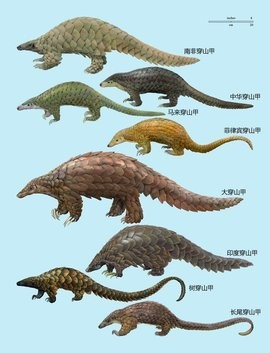 | 穿山甲 穿山甲（拉丁学名：Manis），是对穿山甲科穿山甲属的统称。目前全世界有8种穿山甲，亚洲和非洲共有4种，包含极危的中华穿山甲、马来穿山甲、濒危的菲律宾穿山甲、印度穿山甲，还有濒危的南非穿山甲、大穿山甲、树穿山甲和长尾穿山甲。 穿山甲是地栖性哺乳动物，体形狭长，全身有鳞甲，四肢粗短，尾扁平而长，背面略隆起。多生活亚热带的落叶森林。白昼常匿居洞中，并用泥土堵塞。晚间多出外觅食，昼伏夜出，遇敌时则蜷缩成球状。 每年的2月的第3个星期六是世界穿山甲日，目前，穿山甲在我国属于国家二级保护野生动物。 |
| 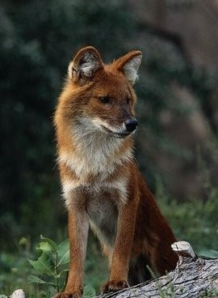 | 豺 豺（学名：Cuon alpinus）有11个亚种，大小似犬而小于狼，体长85-130厘米，尾长45-50厘米，体重10-20千克。吻较狼短而头较宽，耳短而圆，身躯较狼为短。四肢较短，尾比狼略长，但不超过体长的一半，其毛长而密，略似狐尾。背毛红棕色，毛尖黑色，腹毛较浅淡。下臼齿每侧仅2枚。 豺既能抗寒，也能耐热，但以南方有林的山地、丘陵为其主要的栖息地。群居性，少则2-3只，一般7-8只，甚至10只或结成更多只聚合成群，雄兽居多，性比为2︰1。集体猎食，常以围攻的方式，几乎在同域分布的大小兽类它们都能对付。寿命约10余岁。虽分布广泛，但数量稀少。广泛分布于整个北亚、南亚及东南亚的大陆地区。 |
| 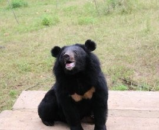 | 亚洲黑熊 亚洲黑熊（学名：Ursus thibetanus）共有7个亚种。体长150～170厘米，体重150千克左右。体毛黑亮而长，下颏白色，胸部有一块"V"字形白斑。头圆，耳大，眼小，吻短而尖，鼻端裸露，足垫厚实，前后足具5趾，爪尖锐不能伸缩。身体粗壮。 栖息于山地森林，主要在白天活动，善爬树，游泳；能直立行走。视觉差，嗅觉、听觉灵敏；食性较杂，以植物叶、芽、果实、种子为食，有时也吃昆虫、鸟卵和小型兽类。北方的黑熊有冬眠习性，整个冬季蛰伏洞中，不吃不动，处于半睡眠状态，至翌年3～4月份出洞活动。夏季交配，怀孕期7个月，每胎1～3仔。分布于欧亚大陆的东部、台湾、日本等地的森林地带。 |
棕熊 棕熊（学名：Ursus arctos）：亦称灰熊。是陆地上食肉目体形最大的哺乳动物之一，体长1.5-2.8米，肩高0.9-1.5米，雄性体重90-800千克，雌性体重80-250千克。头大而圆，体形健硕，肩背隆起。被毛粗密，冬季可达10厘米；颜色各异，如金色、棕色、黑色和棕黑等。前臂十分有力，前爪的爪尖最长能到15厘米。由于爪尖不能象猫科动物那样收回到爪鞘里，这些爪尖相对比较粗钝。前臂在挥击的时候力量强大，“粗钝”的爪子可以造成极大破坏。 主要栖息在寒温带针叶林中，多在白天活动，行走缓慢，没有固定的栖息场所，平时单独行动。食性较杂，植物包括各种根茎、块茎、草料、谷物及果实等，喜吃蜜，动物包括蚂蚁、蚁卵、昆虫、啮齿类、有蹄类、鱼和腐肉等。冬眠，在冬眠时体温、心跳和排毒系统都会停止运作，以减少热量及钙质的流失，防止失温及骨质疏松。奔跑时速度可达56公里/时。冬眠期间产仔，每胎1-4仔，春季雌熊常带小熊在林中玩耍。分布于欧亚大陆，以及北美洲大陆的大部分地区 |
|
| 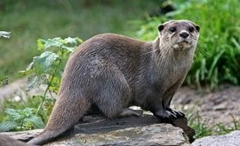 | 水獭 水獭（学名：Lutra lutra）为鼬科、水獭属动物。水獭躯体长，吻短，眼睛稍突而圆，耳朵小，四肢短，体背部为咖啡色，腹面呈灰褐色。 水獭多穴居，白天休息，夜间出来活动，除交配期以外，平时都单独生活，善于游泳和潜水，听觉、视觉、嗅觉都很敏锐，食性较杂，一年四季都能交配，每胎产1-5仔，主要栖息于河流和湖泊一带，尤其喜欢生活在两岸林木繁茂的溪河地带，分布范围极广，亚洲、欧洲、非洲都有其的踪迹。 |
| 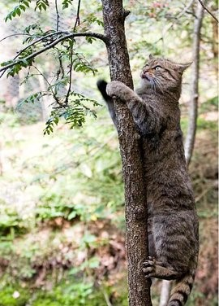 | 草原斑猫 草原斑猫（学名：Felis silvestris shawiana）又叫野猫、沙漠斑猫、土狸子等。是野猫的中国亚种。体形比家猫大，体长为50-70厘米，尾长为25-35厘米，几乎正好是体长的一半，体重约为8千克，看上去显得比较粗壮。目光狡黠，性情暴躁，各色毛皮上有斑点. 喜好在草原或绿洲穿行觅食。单独在夜间或晨昏活动，白天隐匿于树穴或灌丛中。主要吃小型啮齿动物、鸟类、蜥蜴和蛙等，也食鱼类和昆虫等。行动敏捷，善于攀爬，潜行隐蔽接近猎物，突然捕食。领域性也很明显，通常每个个体大约占据0．5平方公里的领地，但当领地内食物不足或者寻找配偶时，也常到领地以外游荡。分布于中国新疆、甘肃、宁夏等省区。 |
| 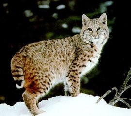 | 荒漠猫 荒漠猫（学名：Felis bieti）是猫科猫属的一种哺乳动物。体形较家猫大，尾长，四肢略长，耳端生有一撮短毛。体背部棕灰或沙黄色，背中线不明显。身上毛长而密，绒毛丰厚。头部与体背颜色一致，上唇黄白色，胡须白色。鼻孔周围和鼻梁棕红色。 它们不畏气候的恶劣，在荒漠、山林边缘、高山灌丛和高山草甸等地带生活。荒漠猫主要捕食一些小型的动物。 |
| 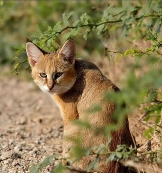 | 丛林猫 丛林猫（学名：Felis chaus）与其他野猫相比，四肢在比例上显得较长而尾短。体背棕灰或沙黄色；耳背面呈粉红棕色，耳尖褐色；体腹面为淡沙黄色；尾端棕黑色。全身毛色几乎一致且缺乏明显斑纹，为该种体色的显著特点。 嗅觉和听觉都很发达，善于奔跑和跳跃，能攀树，常用尿液标记领地。依靠伏击猎食。主要食物包括鼠类和蛙类，亦进食鹧鸪等鸟类或捕食雉、孔雀等大型禽类，也食腐肉和果实，有时潜入村寨盗食家禽。 栖息地类型多样，但很少在热带雨林（英文名Jungle指热带丛林），故“丛林猫”的用名不当。该种猫是典型的生活在芦苇丛、香蒲丛以及湖周潮湿的低地森林；也见于热带落叶林和灌丛，甚至海拔高达2400米的喜马拉雅地区。在中国多数地区它们更喜欢高草丛、沼泽地和芦苇地，也见于沿河滨生态系统的干燥环境。 |
| 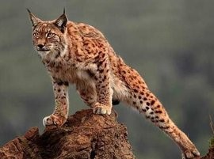 | 猞猁 猞猁（学名：Lynx lynx）：属于猫科，体型似猫而远大于猫，体粗壮，尾极短，通常不及头体长的1/4。四肢粗长而矫健。耳尖生有黑色耸立簇毛。两颊具下体浅棕、土黄棕、浅灰褐或麻褐色，或为灰白而间杂浅棕色调；腹面浅白、黄白或沙黄色。尾端呈黑色。 猞猁为喜寒动物，栖息环境极富多样性，从亚寒带针叶林、寒温带针阔混交林至高寒草甸、高寒草原、高寒灌丛草原及高寒荒漠与半荒漠等各种环境均有其足迹。生活在森林灌丛地带，密林及山岩上较常见。喜独居，长于攀爬及游泳，耐饥性强，可在一处静卧几日，不畏严寒，以鼠类、野兔等为食，也捕食小野猪和小鹿等为食。巢穴多筑在岩缝石洞或树洞内。每胎2-4仔。广泛分布于欧洲和亚洲北部。 |
| 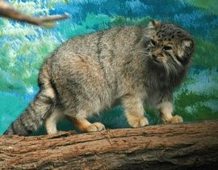 | 兔狲 兔狲（学名：Otocolobus manul）体形粗短，大小似家猫，体重2～3千克，栖息于沙漠、荒漠、草原或戈壁地区，能适应寒冷、贫瘠的环境，常单独栖居于岩石缝里或利用旱獭的洞穴，通路弯曲，深2米以上。夜行性，多在黄昏开始活动和猎食。视觉和听觉发达，遇危险时则迅速逃窜或隐蔽在临时的土洞中。 腹部的长毛和绒毛具有很好的保暖作用，有利于长时间地伏卧在冻土地或雪地上，伺机捕猎。叫声似家猫，但较粗野。主要以鼠类为食，也吃野兔、鼠兔、沙鸡等。 分布于亚洲中部地带向东至西伯利亚。 |
| 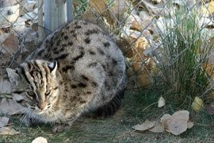 | 渔猫 渔猫，是一种中等体型的猫科动物，头体长65～85厘米，主要分布于中南半岛、印度、孟加拉、斯里兰卡、苏门答腊和爪哇岛，一般生活于林区的灌丛地带、沿河的芦苇丛以及热带海岸的常绿林。主食是鱼类，喜夜行，生性凶猛，不易人工驯养。野生渔猫的平均寿命为10～12年。 |
| 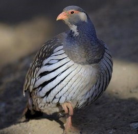 | 雪鸡 雪鸡（学名：Tetraogallus）共有5种，是世界上分布最高的稚类，一般分布3000～6000米，直至雪线以上，能终年留居山顶，平原少见。雪鸡以植物的茎、根、叶、芽等为食，有时兼吃昆虫和小型无脊椎动物。此属分布于亚洲中部和南部的高山地带，从高加索、土耳其向东至苏蒙边界。在中国，雪鸡分布在新疆、西藏、青海、甘肃和四川西部。 |
| 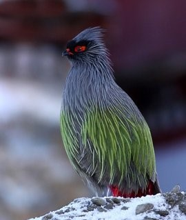 | 血雉 血雉（学名：Ithaginis cruentus），别名血鸡、松花鸡，血雉的雄鸟大覆羽、尾下覆羽、尾上覆羽、脚、头侧、腊膜为红色，故称血雉。其别名甚多，各地皆异。在甘肃，因其胸侧和翅上覆羽沾绿，被称为“绿鸡”；因其羽毛形似柳叶，且沾绿，又称为“柳鸡”；因其主要栖于松林和云杉林，食松（杉）叶和种子，又称为“松鸡子”；又因其脚红色，称“红脚鸡”者最为普遍。主要分布于中国，为国家二级保护动物，西部和西南部留鸟。 |
| 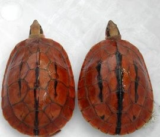 | 三线闭壳龟 三线闭壳龟（学名：Cuora trifasciata）又称金钱龟，金头龟，红边龟，红肚龟，断板龟，川字背龟，分类上属爬行纲，龟鳖目，龟科，闭壳龟属。国内主要分布在海南、广西、福建以及广东省的深山溪涧等地方，国外分布于越南、老挝。此龟已被我国列为二级保护动物。 |
| 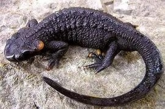 | 镇海棘螈 镇海棘螈（学名：Echinotriton chinhaiensis）为蝾螈科棘螈属的两栖动物，是中国的特有物种，无亚种。分布于浙江等地，一般栖息于沿海丘陵地区山脚旁以及阴暗潮湿土质松软的泥土或石隙中。其生存的海拔范围为100至200米。该物种的模式产地在浙江镇海城湾。 |
| 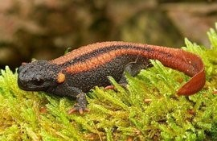 | 贵州疣螈 贵州疣螈（学名：Tylototriton kweichowensis）两栖类动物，蝾螈科疣螈属，中国特有种。贵州疣螈体长16—21厘米，尾长6—9厘米。体形和体表色斑与细痣疣螈相似，生活在高山小流溪附近。一般夜晚取食昆虫及其他小型动物（蛞蝓、小螺、蚌和蝌蚪等）为食。主要分布在贵州，云南，国家二级重点保护动物，频危。 |
| 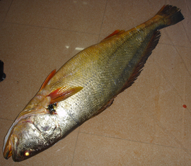 | 黄唇鱼 黄唇鱼，闽粤人称金钱鮸、金钱猛鱼，又名(鱼高)。温州人称黄甘，属硬骨鱼纲鲈形同石首鱼科，体长、侧扁，尾柄细长。近海暖温性稀有底层鱼类，栖息于近海水深50~60米海区，幼鱼栖息于河口及其附近沿岸， 分布于东海和南海北部。为肉食性鱼类，以小型鱼类和虾、蟹等大型甲壳类为食，幼鱼则以虾类为食。黄唇鱼是中国的特有鱼种，属于国家二级保护动物。 |
| 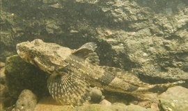 | 松江鲈鱼 松江鲈鱼（学名：Trachidermus fasciatus）头圆，向后渐侧扁。头部有棱无棘，前鳃盖骨有4棘，上棘最大，上弯。背鳍连续，有一深凹。口大，上颌略长。颌骨、犁骨及腭骨均具绒毛状齿群。胸鳍下部鳍条不分支。腹鳍1-4。鳃膜上有两橙色斜纹，酷似2片鳃叶，故有“四鳃鲈”之称。 为近岸浅海鱼类，一般在与海相通的淡水河川区域生长育肥，性成熟后，降河入海产卵，幼鱼回到淡水河川中生活。2月中旬至3月中旬繁殖。繁殖后雌鱼离去，雄鱼留在巢内护卵。初孵仔鱼全长5.3-6.3毫米，1龄即达性成熟。黄、渤海和东海均有分布，为名贵的食用鱼类。 |